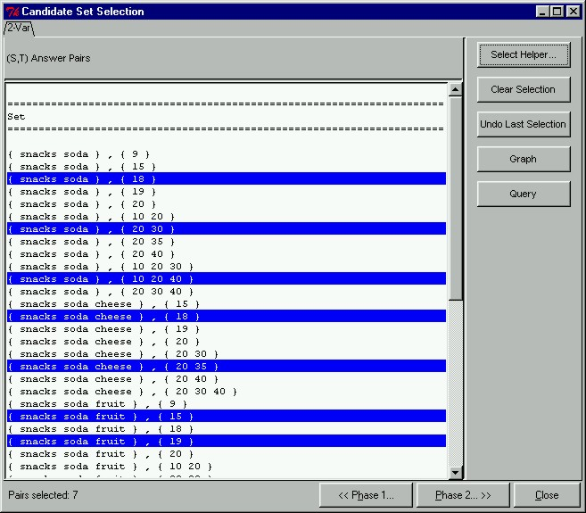

 |
Candidate Set Selection ModeAfter we have changed the view of the candidate output to our preferences, we can proceed to select only those candidate pairs that we are interested in to find relationships on. This is unlike the classical model where all pairs are tested for significance. To select only interesting candidates in the prototype, we have to switch to Selection Mode by clicking on the "Selection Mode..." button in the CAP Candidate Sets window. Once in Selection Mode, we will see only candidate pairs. In this window we have manually selected only those candidate pairs that are interesting enough to find relationships on. The interesting candidate pairs have already been highlighted in blue.
|